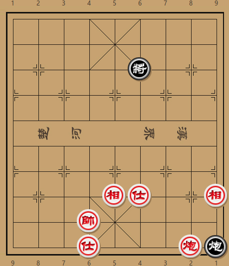
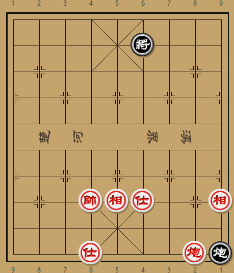

One minute
排局-01

9/9/5k3/9/9/9/9/4BA2B/3K5/3A3Cc w
如图局面，是我不久前从残局库中发现的一个挺有意思的局面，红先胜。
分析：
从初始盘面来看，双方各有一炮，红方有士相，黑方仅光将且在三楼，估计是要在困炮的同时调整阵型，最后白脸将杀。
最直接的思路是打两将之后扬相，然后帅占中路做杀。但黑方有一手叫闷可解：
- 炮二平四 将６平５
- 炮四平五 将５平６
- 相五进三 将６平５
- 仕六进五 将５平６
- 帅六进一 炮９平８
此路虽不通，但红方另有一路攻法，就是先上帅，然后再运炮做攻。由于红炮占位，黑方走不到炮9平8，形势十分不妙。将如6平5红方则顺势炮二平五打将。炮9退1也难挽颓势：
- 帅六进一 炮９退１
- 炮二平四 炮９平６
- 帅六退一 将６平５
- 炮四平五 将５平６
- 帅六平五 炮６进１
- 相五进七 将６退１
- 帅五进一 将６退１
- 仕六进五 炮６退１
- 炮五平四 将６进１
- 仕五进六 将６进１
- 帅五退一 捉死炮胜
当然，这则排局并非如此简单。黑方炮9退1不是应对帅六进一的最顽强走法。黑方有一手将6退1可以某得和局。下将后，红方当然不能急于炮二平四打将，否则黑方可以从容炮9平8再炮8退7防守。于是红方只有先飞相，但无论红相往哪边去，黑方都有妙手化解。

如图形势，如红飞三七高相，则黑方炮击底士，而后绕回防守，红方无计可施：
- 相五进七 炮９平４
- 炮二平四 将６平５
- 炮四平五 炮４平２
如红落相，黑方当然不能打士（否则炮被困死）。正确走法是将6平5占中：
- 相五退七 将６平５
- 仕六进五 炮９平３
- 炮二平五 将５平６
- 帅六平五 炮３退７
红方自己落下来的底相被黑方打掉然后借机回防，也是十分有趣。
那正确的攻法是什么呢？还是先从运炮入手：
- 炮二平四 将６平５
- 炮四平五 将５平６
- 相五进三 将６平５
- 仕六进五 将５平６
红方直接上帅并不能奏效，但这里如果46路的子力调换一下，红帅在4路，士和黑将在6路，则黑方无法借助炮9平8防守。但红方怎样才能调整阵型，达到上述目标呢？且看后续着法：
- 仕五进六 将６平５
- 相三退五 将５平６
- 帅六平五 将６平５
- 帅五平四 将５平６
- 相五进三 将６平５
红方借连续做杀之机，将底士高扬，并将中相落回，后将帅运至4路。黑方将6平5，是因红威胁进帅绝杀，所以只得放弃4路。红方继续贯彻思路：
- 仕四退五 将５平４
- 帅四进一 炮９平８
- 帅四平五 红胜定
本局独特之处在于，红方的攻法不仅是隔步杀，而且心中需要有一个明确的目标。离开这个目标，红方的着法都没有意义。一位好友指出，这局有些像数学题。我觉得在这局棋里，更多的是推理和排除，而不是传统意义上的计算。说来也巧，我们都是数学专业出身，所以对这类题目情有独钟。后续我还会发布几则类似味道的局面，欢迎大家批评指正。